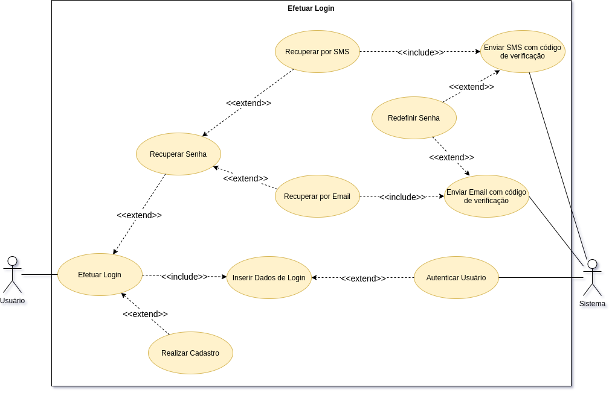
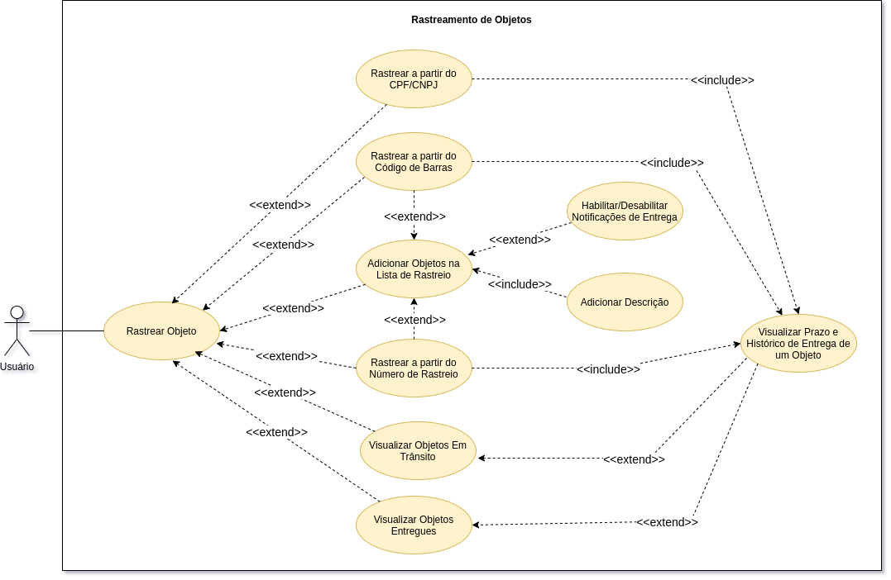
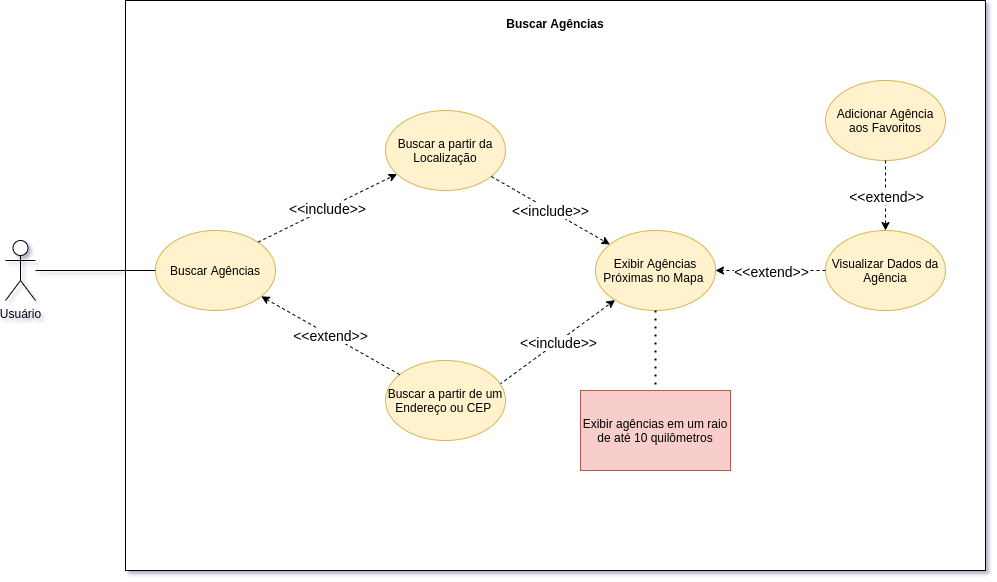
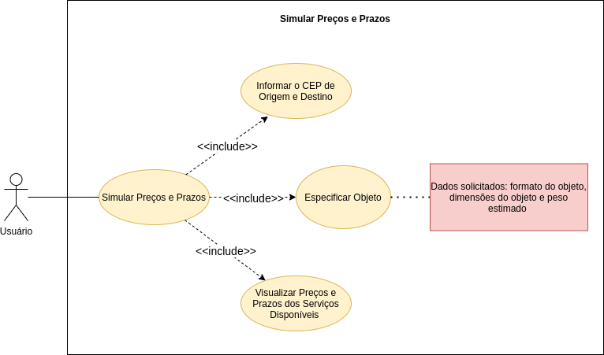
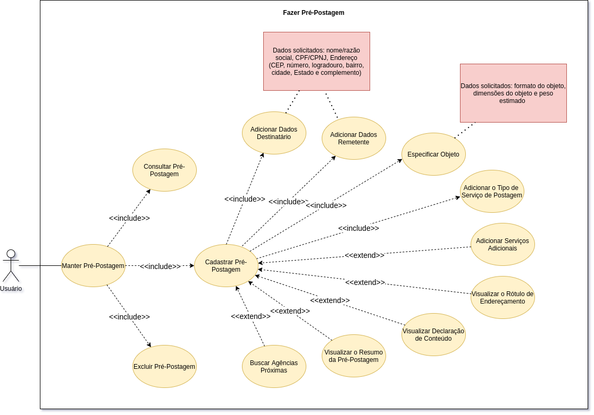

Casos de Uso
Introdução
Usados para descrever um conjunto de ações (use cases – casos de uso) que um sistema ou um conjunto de sistemas (subject - sujeito) deve desempenhar em colaboração com um ou mais usuários externos ao sistema (actors - atores).
Cada caso de uso deverá prover algum resultado observável e de valor para os atores ou outros interessados do sistema.
Legenda
| Código | Significado |
|---|---|
| UC | Use Case(Caso de Uso) |
| FP | Fluxo Principal |
| FA | Fluxo Alternativo |
| FE | Fluxo de Exceção |
| PE | Ponto de Extensão |
Caso de Uso - Geral

UC01 - Efetuar Login

| UC01 | Efetuar Login |
|---|---|
| Descrição | Funcionalidade que permite o usuário efetuar login. |
| Ator(es) | Usuário e Sistema(App dos Correios) |
| Pré-Condições | Usuário deve estar deslogado no aplicativo. |
| Pós-Condições | Usuário ficará logado na sua conta até que faça logout. Usuário deve ter acesso as funcionalidades que exigem login. |
| Fluxo Principal | [FP01] Efetuar login 1. Usuário solicita efetuar login. 2. Usuário preenche o formulário de login com cpf e senha. 3. Usuário clica "Login" 4. Sistema autentica o usuário. 5. Sistema redireciona o usuário para tela inicial. |
| Fluxo(s) Alternativo(s) | - |
| Ponto(s) de Extensão | [PE01] Recuperar senha 1. Usuário solicita recuperar senha. 2. Usuário informa o seu cpf. 3. Usuário seleciona uma opção para recuperar senha (SMS ou Email). 4. Sistema envia um código de verificação de acordo com a opção selecionada. 6. Usuário informa o código de verificação. 7. Usuário redefine a sua senha. [PE02] Realizar cadastro 1. Usuário solicita realizar cadastro. 2. Aciona o caso de uso UC02. |
| Fluxo(s) de Exceção | [FE01] Dados de login inválidos 1. Sistema apresenta uma mensagem de erro. |
UC02 - Realizar Cadastro
| UC02 | Realizar Cadastro |
|---|---|
| Descrição | Funcionalidade que permite o usuário realizar o seu cadastro. |
| Ator(es) | Usuário e Sistema(App dos Correios) |
| Pré-Condições | Usuário deve estar deslogado no aplicativo. |
| Pós-Condições | Usuário deve ter conseguido acessar a sua conta que foi cadastrada. |
| Fluxo Principal | [FP02] Realizar cadastro 1. Usuário solicita realizar cadastro. 2. Usuário informa os dados de cadastro. 3. Sistema valida os dados inseridos. 4. Sistema envia um SMS com o código de verificação para o telefone informado no formulário. 5. Usuário insere o código de verificação recebido. 6. Sistema envia um email com o um link para ativar a conta. 7. Usuário acessa o seu email e ativa a sua conta. |
| Fluxo(s) Alternativo(s) | - |
| Ponto(s) de Extensão | - |
| Fluxo(s) de Exceção | [FE02] Dados de cadastro inválidos 1. Sistema apresenta uma mensagem de erro informando os campos inválidos. |
UC03 - Rastrear Objetos

| UC03 | Rastrear Objetos |
|---|---|
| Descrição | Funcionalidade que permite o usuário rastrear objetos. |
| Ator(es) | Usuário |
| Pré-Condições | - |
| Pós-Condições | Usuário deve ter conseguido visualizar o prazo de entrega estimado e o histórico de entrega do objeto. |
| Fluxo Principal | [FP03] Rastrear objeto por número de rastreio 1. Usuário acessa o opção rastreamento. 2. Usuário insere o número de rastreio do objeto. 3. Usuário solicita rastreio. 4. Sistema exibe o prazo de entrega estimado e o histórico de entrega do objeto. |
| Fluxo(s) Alternativo(s) | [FA01] Rastrear objeto por cpf/cpnj 1. Usuário acessa o opção rastreamento. 2. Usuário solicita buscar objetos a partir do seu cpf/cnpj. 3. Sistema exibe o prazo de entrega estimado e o histórico de entrega do objeto. [FA02] Rastrear objeto por código de barras 1. Usuário acessa o opção rastreamento. 2. Usuário solicita buscar objeto por código de barras de rastreamento. 3. Usuário escaneia o código de barras. 4. Sistema exibe o prazo de entrega estimado e o histórico de entrega do objeto. |
| Ponto(s) de Extensão | [PE03] Adicionar objetos na lista de rastreio 1. Usuário solicita adicionar objeto. 2. Usuário informa o número de rastreio do objeto. 3. Usuário adiciona uma descrição para objeto. [PE04] Visualizar objetos em trânsito 1. Usuário solicita visualizar os objetos em trânsito. 2. Sistema apresenta uma lista dos objetos em trânsito. [PE05] Visualizar objetos entregues. 1. Usuário solicita visualizar os objetos entregues. 2. Sistema apresenta uma lista dos objetos entregues. |
| Fluxo(s) de Exceção | [FE03] Número de rastreio inválido 1. Sistema apresenta uma mensagem de erro informando que o número de rastreio é inválido. [FE04] Usuário não possui nenhum objeto vinculado ao seu CPF/CNPJ 1. Sistema apresenta uma mensagem informando que não há nenhum objeto vinculado ao seu CPF/CNPJ. |
UC04 - Buscar Agências

| UC04 | Buscar Agências |
|---|---|
| Descrição | Funcionalidade que permite o usuário buscar agências próximas. |
| Ator(es) | Usuário |
| Pré-Condições | O GPS do celular do usuário deve estar ligado. |
| Pós-Condições | Usuário deve ter conseguido visualizar em um mapa todas as agência próximas da sua localização. |
| Fluxo Principal | [FP04] Buscar agências 1. Usuário solicita buscar agências. 2. O sistema apresenta um mapa com as agências mais próximas da localização do usuário(até 10 quilômetros). |
| Fluxo(s) Alternativo(s) | [FA03] Buscar agências a partir de um endereço ou cep 1. Usuário solicita buscar agências. 2. Usuário insere um endereço ou cep. 3. Sistema exibe um mapa com as agências mais próximas do endereço ou cep indicado. |
| Ponto(s) de Extensão | [PE06] Visualizar dados da agência 1. Usuário executa o [FP04] ou [FA03]. 2. Usuário clica no marcador da agência desejada. 3. Sistema apresenta os dados da agência, como horário de atendimento, endereço e telefone. [PE07] Adicionar agência aos favoritos 1. Usuário executa o [PE06]. 2. Usuário adiciona a agência aos favoritos. |
| Fluxo(s) de Exceção | [FE05] GPS desativado 1. Sistema informa que não foi possível recuperar a localização e solicita a busca a partir de um endereço ou cep. [FE06] Endereço ou CEP inválido 1. Sistema informa que não foi possível encontrar a localização. |
UC05 - Simular Preços e Prazos

| UC05 | Simular Preços e Prazos |
|---|---|
| Descrição | Funcionalidade que permite o usuário simular preços e prazos de uma postagem. |
| Ator(es) | Usuário |
| Pré-Condições | - |
| Pós-Condições | Usuário deve conseguir visualizar os serviços de entrega disponíveis para simulação solicitada. |
| Fluxo Principal | [FP05] Simular preços e prazos 1. Usuário solicita simular preços e prazos. 2. Usuário informa o cep de origem e destino. 3. Usuário especifica o objeto, informando o formato do objeto, dimensões do objeto e peso estimado. 4. Usuário solicita a simulação a partir dos dados informados. 5. Sistema apresenta os preços e os prazos dos serviços de entrega disponíveis. |
| Fluxo(s) Alternativo(s) | - |
| Ponto(s) de Extensão | - |
| Fluxo(s) de Exceção | [FE07] Nenhum serviço de entrega disponível 1. Sistema informa que não existe nenhum serviço de entrega disponível para a simulação solicitada. |
UC06 - Manter Pré-Postagens

UC06 - Cenário: Consultar
| UC06 | Manter Pré-Postagens - Cenário: Consulta Pré-Postagem |
|---|---|
| Descrição | Funcionalidade que permite consultar uma pré-postagem cadastrada. |
| Ator(es) | Usuário |
| Pré-Condições | - |
| Pós-Condições | Usuário deve ter conseguido visualizar os dados da pré-postagem solicitada. |
| Fluxo Principal | [FP06] Consultar pré-postagem 1. Usuário acessa as pré-postagens cadastradas. 2. Sistema lista as pré-postagens cadastradas. 3. Usuário clica na pré-postagem desejada. 4. Sistema recupera e apresenta os dados da pré-postagem. 5. Sistema apresenta a pré-postagem e exibe um menu no as seguintes operações: resumo, visualizar rótulo, visualizar declaração de conteúdo e buscar agência próxima. |
| Fluxo(s) Alternativo(s) | [FA04] Buscar pré-postagem 1. Usuário acessa as pré-postagens cadastradas. 2. Usuário insere alguma informação para filtrar a pré-postagem desejada. 3. Sistema recupera as pré-postagens filtradas. 4. Usuário clica na pré-postagem desejada. 5. Sistema recupera e apresenta os dados da pré-postagem. 6. Sistema apresenta a pré-postagem e exibe um menu no as seguintes operações: resumo, visualizar rótulo, visualizar declaração de conteúdo e buscar agência próxima. |
| Ponto(s) de Extensão | - |
| Fluxo(s) de Exceção | - |
UC06 - Cenário: Cadastrar
| UC06 | Manter Pré-Postagens - Cenário: Cadastrar |
|---|---|
| Descrição | Funcionalidade que permite cadastrar pré-postagens. |
| Ator(es) | Usuário |
| Pré-Condições | - |
| Pós-Condições | Usuário deve ter conseguido cadastrar uma pré-postagem. |
| Fluxo Principal | [FP07] Cadastrar Pré-Postagem 1. Usuário solicita fazer uma pré-postagem. 2. Usuário insere os dados do destinatário ou seleciona um endereço já cadastrado. 2. Usuário insere os dados do remetente ou seleciona um endereço já cadastrado. 4. Usuário especifica o objeto a ser postado, informando o formato do objeto, dimensões do objeto e peso estimado. 5. Usuário seleciona o tipo de serviço de entrega. 6. Usuário seleciona algum serviço adicional(se aplicável). 7. Usuário finaliza a pré-postagem. 8. Sistema cadastra a pré-postagem. 9. Sistema apresenta a pré-postagem e exibe um menu no as seguintes operações: resumo, visualizar rótulo, visualizar declaração de conteúdo e buscar agência próxima. |
| Fluxo(s) Alternativo(s) | - |
| Ponto(s) de Extensão | - |
| Fluxo(s) de Exceção | [FE08] Dados de cadastro inválidos 1. Sistema apresenta uma mensagem de erro informando os campos inválidos. |
UC06 - Cenário: Excluir
| UC06 | Manter Pré-Postagens - Cenário: Excluir |
|---|---|
| Descrição | Funcionalidade que permite excluir pré-postagens. |
| Ator(es) | Usuário |
| Pré-Condições | - |
| Pós-Condições | Usuário deve ter conseguido excluir uma pré-postagem. |
| Fluxo Principal | [FP08] Excluir pré-postagem 1. Usuário executa os passos 1 e 2 do [FP06] ou os passos 1, 2 e 3 do [FA04]. 2. Usuário seleciona e solicita a exclusão da pré-postagem desejada. 3. Sistema solicita confirmação da exclusão. 4. Usuário confirma a exclusão. 5. Sistema exclui a pré-postagem solicitada. |
| Fluxo(s) Alternativo(s) | [FA05] Usuário não confirma exclusão 1. Usuário não confirma exclusão da pré-postagem. 2. Sistema retorna para o passo 1 do [FP08]. |
| Ponto(s) de Extensão | - |
| Fluxo(s) de Exceção | - |
UC07 - Manter Endereços
UC07 - Cenário: Consultar
| UC07 | Manter Endereços - Cenário: Consultar |
|---|---|
| Descrição | Funcionalidade que permite consultar um endereço cadastrado. |
| Ator(es) | Usuário |
| Pré-Condições | - |
| Pós-Condições | Usuário deve ter conseguido visualizar os dados do endereço solicitado. |
| Fluxo Principal | [FP09] Consultar endereço 1. Usuário acessa os endereços cadastrados. 2. Sistema lista os endereços cadastrados. 3. Usuário clica no endereço desejado. 4. Sistema recupera e apresenta os dados do endereço. |
| Fluxo(s) Alternativo(s) | [FA06] Buscar Endereço 1. Usuário acessa os endereços cadastrados. 2. Usuário insere alguma informação para filtrar o endereço desejado. 3. Sistema recupera os endereços filtrados. 4. Usuário clica no endereço desejado. 5. Sistema recupera e apresenta os dados do endereço. |
| Ponto(s) de Extensão | - |
| Fluxo(s) de Exceção | - |
UC07 - Cenário: Cadastrar
| UC07 | Manter Endereços - Cenário: Cadastrar |
|---|---|
| Descrição | Funcionalidade que permite cadastrar um endereço. |
| Ator(es) | Usuário |
| Pré-Condições | - |
| Pós-Condições | Usuário deve ter conseguido cadastrar um endereço. |
| Fluxo Principal | [FP10] Cadastrar endereço 1. Usuário solicita cadastrar um endereço. 2. Sistema apresenta o formulário de cadastro de endereço. 3. Usuário insere os dados de cadastro. 4. Usuário finaliza o cadastro. 5. Sistema cadastra o endereço. |
| Fluxo(s) Alternativo(s) | - |
| Ponto(s) de Extensão | - |
| Fluxo(s) de Exceção | [FE09] Dados de cadastro inválidos 1. Sistema apresenta uma mensagem de erro informando os campos inválidos. |
UC07 - Cenário: Alterar
| UC07 | Manter Endereços - Cenário: Alterar |
|---|---|
| Descrição | Funcionalidade que permite alterar um endereço. |
| Ator(es) | Usuário |
| Pré-Condições | - |
| Pós-Condições | Usuário deve ter conseguido alterar um endereço. |
| Fluxo Principal | [FP11] Alterar endereço 1. Usuário executa o [FP09] ou o [FA06]. 2. Usuário altera os campos que deseja. 3. Usuário insere os dados de cadastro. 4. Usuário finaliza o alteração. 5. Sistema altera o endereço. |
| Fluxo(s) Alternativo(s) | - |
| Ponto(s) de Extensão | - |
| Fluxo(s) de Exceção | [FE10] Dados inválidos 1. Sistema apresenta uma mensagem de erro informando os campos inválidos. |
UC07 - Cenário: Excluir
| UC07 | Manter Endereços - Cenário: Excluir |
|---|---|
| Descrição | Funcionalidade que permite excluir um endereço. |
| Ator(es) | Usuário |
| Pré-Condições | - |
| Pós-Condições | Usuário deve ter conseguido excluir um endereço. |
| Fluxo Principal | [FP12] Excluir endereço 1. Usuário executa os passos 1 e 2 do [FP09] ou os passos 1, 2 e 3 do [FA06]. 2. Usuário seleciona e solicita a exclusão do endereço desejado. 3. Sistema solicita confirmação da exclusão. 4. Usuário confirma a exclusão. 5. Sistema exclui o endereço solicitado. |
| Fluxo(s) Alternativo(s) | [FA07] Usuário não confirma exclusão 1. Usuário não confirma exclusão do endereço. 2. Sistema retorna para o passo 2 do [FP12]. |
| Ponto(s) de Extensão | - |
| Fluxo(s) de Exceção | - |
UC08 - Consultar Agências Favoritas
| UC08 | Consultar Agências Favoritas |
|---|---|
| Descrição | Funcionalidade que permite consultar as agências favoritas. |
| Ator(es) | Usuário |
| Pré-Condições | Usuário deve estar logado. |
| Pós-Condições | Usuário deve ter conseguido consultar uma agência favorita. |
| Fluxo Principal | [FP13] Consultar agência favorita 1. Usuário solicita consultar agências favoritas. 2. Sistema lista as agências favoritas. 3. Usuário clica na agência desejada. 5. Sistema recupera e apresenta os dados da agência. |
| Fluxo(s) Alternativo(s) | - |
| Ponto(s) de Extensão | [PE08] Remover agência da lista de favoritos 1. Usuário executa o [FP13]. 2. Usuário solicita remover agência dos favoritos. 3. Sistema remove a agência solicitada dos favoritos. |
| Fluxo(s) de Exceção | - |
UC09 - Consultar Dados Pessoais
| UC09 | Consultar Dados Pessoais |
|---|---|
| Descrição | Funcionalidade que permite consultar os dados pessoais do usuário. |
| Ator(es) | Usuário |
| Pré-Condições | Usuário deve estar logado. |
| Pós-Condições | Usuário deve ter conseguido visualizar os seus dados pessoais. |
| Fluxo Principal | [FP14] Consultar dados pessoais 1. Usuário solicita os dados pessoais. 2. Sistema recupera e apresenta os dados pessoais do usuário. |
| Fluxo(s) Alternativo(s) | - |
| Ponto(s) de Extensão | [PE09] Alterar dados pessoais 1. Usuário executa o [FP14]. 2. Usuário altera os dados desejado. 3. Usuário solicita alteração dos dados. 4. Sistema altera os dados pessoais do usuário. |
| Fluxo(s) de Exceção | [FE11] Dados pessoais inválidos 1. Sistema apresenta uma mensagem de erro informando os campos inválidos. |
UC10 - Cancelar Conta
| UC09 | Cancelar Conta |
|---|---|
| Descrição | Funcionalidade que permite que o usuário cancele a sua conta. |
| Ator(es) | Usuário |
| Pré-Condições | Usuário deve estar logado. |
| Pós-Condições | Usuário deve ter conseguido cancelar a sua conta. |
| Fluxo Principal | [FP15] Cancelar conta 1. Usuário solicita cancelar conta. 2. Sistema solicita o motivo do cancelamento. 3. Usuário insere o motivo do cancelamento. 4. Usuário solicita cancelamento definitivo da conta. 5. Sistema cancela a conta do usuário. |
| Fluxo(s) Alternativo(s) | - |
| Ponto(s) de Extensão | - |
| Fluxo(s) de Exceção | - |
Controle de versão
| Data | Versão | Descrição | Autor(es) |
|---|---|---|---|
| 09/10/20 | 0.1 | Adição da primeira dos casos de uso | Gustavo Nogueira |
Referências
- SERRANO, Maurício; SERRANO, Milene. Requisitos - Aula 11. 1º/2019. 40 slides. Material apresentado para a disciplina de Requisitos de Software no curso de Engenharia de Software da UnB, FGA.